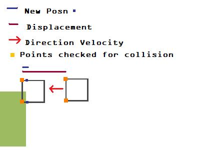
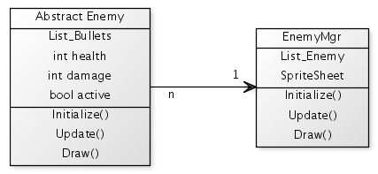
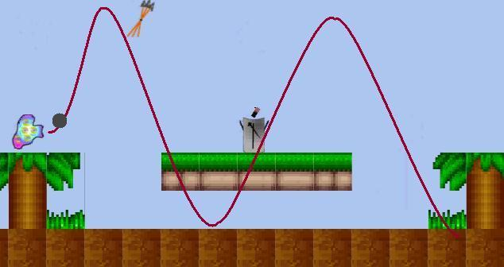
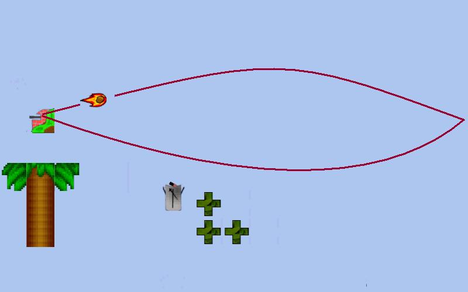

Juhuligan is my first big game where my objective was to get a better understanding of how the game-elements work together, especially from a programmer's perspective. Being a side-scroller, there are a lot of different type of game entities interacting in their own ways. Thus, as my previous games have done, this game had exposed me to all sorts of challenges, and now, I have a much better understanding of game programming. Also, I learnt about some of the bad programming practises, the hard way!
I have broken down my journey in these parts:
Programming
challenges:
When I started out making this game, I just wanted to improve my game
programming skills. I wanted to understand things better than what I
already did. Without a vision, I decided that the game would be
something between mario and contra. This was my biggest flaw! (Lessons
Learnt(LL) #1). I'll walk you through my development journey.
I recently came to know what I was doing here is data driven programming. I populate a world array with a tile number which represents which tile to draw from the world tilesheet. At this stage, I just populated the array manually.
This was my first hurdle. I would say that this was my
biggest hurdle for I tried myriad approaches and it was unsolved for a
long long time (LL #2). But, now I know
the problem with all the
approaches that I tried, and it feels good to know them! The solution
that finally worked for me was what I had thought at the beginning.(LL
#3) This is what I used in the end:

To check for collision, we need the following:
This was my second biggest hurdle. And it was hard to go on with one big problem followed by another equally painful problem, especially after all the head-banging for the character's movement.
Side-scrolling was not hard to do. I got it going relatively easily. What was hard to do was smooth side scrolling. The way I coded earlier, it used to move one tile per scrolling. This just dint cut through, since I had a some people try it and all of them complaint of this one thing. Thus, I needed a way to make it smooth. After some crazy nights, I ended up using the concept of World space and Screen space, something that I had just learnt in my graphics class at school. I had to implement these two functions to transform anything from World to Screen space or vice versa, & voila, it worked! I had everything happening in the world space. Whatever entity needed to draw itself, it would call upon WorldToScreen(Position) to draw in the Screen space. The code snippet:
public Vector2
WorldToScreen(Vector2 worldPosn) { Vector2 screenPosn =
Vector2.Zero; screenPosn.X = worldPosn.X - viewPort.X; screenPosn.X *=
Constants.TileWidth; screenPosn.Y = worldPosn.Y - viewPort.Y;
screenPosn.Y *= Constants.TileHeight; return screenPosn; }
This part of the code really was not too hard to do, especially with all the ground work done. Though, this required to put my OO skills to test. It finally led me to develop, what I call as, Manager of Manager (MoM) architecture. I used EnemyManager and the minions as the enemies themselves.
Also, I wanted to make it efficient, so that I dont update/draw enemies that are not anywhere even near the player. (It made no sense to update/draw an enemy that is to be found at the end of the level, when the player is on the first screen). Thus, I had a bool 'active' flag which denoted when to activate/deactivate enemy (using ActivateEnemies()). Only active enemies were updated/drawn. For different types of enemies, I first identified the enemy behaviours and used simple 1 level of inheritance.
My weapon class had two variants of update function: one for its parent ResourceManager and the other for player. Nothing much to say here, since it conforms to the MoM architecture. Also, Weapon Class takes care of the input mouse click and pointing the bullets in the right direction. One thing to note here is, both the enemies and player use the same bullet class. For different trajectories of the bullet, they are identified using enumerator. Since, the distinction between different bullets' trajectory is more data oriented, thus I chose not to go in for inheritance. I would also like to mention about my approach to getting the curved trajectory for bullets. I did not use sin and cosine functions!! When I started writing code for this, I realized I was making too many calls to sine and cosine. With these being called every frame, I just couldnt go ahead with it. My first trajectory that I had to try out was a sine curve for the Frogger.
 Here, as soon as I hit the
threshold of 0.4 as height, I reverse the direction of Y and update the
velocity accordingly. Its a simple, yet a very effective solution to my
problem of calling sine to calculate the final velocity.
The other type of trajectory was the boomerang type. I was not shooting
for a perfect circular trajectory, but an approximate elliptical
trajectory. Again, I decided to use the rate of change of X with
respect to Y. It took me some time to get the proportions right,
otherwise, if X and Y are not changing in the right proportions; the
final trajectory would go haywire and I had all sorts of wierd(yet
beautiful :-) ) paths!

After a while, I thought I'll try to write generic equations in terms
of X and Y to yield me the curve that I wanted. After spending a lot of
time and reading around, I was enlightened to read about Bezier curves.
This is exactly what I was trying to invent! I was doing the same thing
as the equation did, but I was working on the data. Anyways, I feel
really proud of discovering Bezier
curves the way I did.
With all the code around, this was fairly easy to do. I had a OO design issue when I was dealing with this. This part of the code really puzzled me for some time since it wanted me to tightly couple the enemy and player together. I finally ended up putting all the enemy and their bullet interaction with the player in the EnemyManager class. I realize this is a really bad way to do things but I look forward to improving my OO skills to get around this. I needed some arbitrator to resolve the outcome of collisions.
This was implemented as yet another MoM architecture. This suffers from tight coupling between the player and ResourceManager. Here, I implemented a timer functionality with multiple modes which allowed resources to be spawned in places only for a specific time duration. This was again based on the trigger set in the world.
Influenced by mario, 100 coins yield a life to the player. Also, there are checkpoints embedded within the world. If a player crosses a certain checkpoint and dies after that, the player is re-spawned at the last checkpoint he crossed. Also, this strips the player of any weapon/ammo he was carrying on him.
I wanted to make HUD more interesting than the usual HUD we have. I also wanted to keep it simple, else it would be too much for the player to handle. For one thing in particular, I needed a way to represent the player's health. After trying out different ideas, this one thing stuck with me. I finally decided to have a face which would give an idea of Player's health. Now, my concern was; the face expression would have to be changing dynamically, as the player takes a hit or a health pack. I pin-pointed the eye-brows and smiley feat to give the player an idea of its mood! My knowledge of Bezier curves really came in handy here and thus came about; my own generic Bezier curve library functions. To these functions, I simply provided the weighted points and it would return a list of points along the curve:
Having used Microsoft's Game State Management, I just had a strong urge to write my own. I also wanted to learn to write my own state/menu manager. I tried to search something useful, but all that I came across was the State Design Pattern. Well, this is what I used to make my own! It basically breaks down into two parts:
A generic sound component in sync with XACT came in real handy. This component takes care of running background song and sound effects during the game.
Throughout the course of the game, I often asked my friends for feedback about the feats which has helped me to improve them.
Have a game design and translate that design to technical design wherein, we translate each requirement to a programming module. DO NOT WORK THE OTHER WAY ROUND. I just ended up spending more time developing each feature, since I had not frozen my goal beforehand. I ended up perfectly programming all the gameplay elements without a game!
Do not move on till a high priority bug is solved. It becomes impossible to debug multiple issues at the same time and might lead to restart from scratch. Also, it results into massive hair loss!
Formulate the problem and solution on paper first. I had all the steps written down for a given solution, but I dint write them elaborately which made all the difference. Be convinced that the solution works and then move on.
In this setup, I have a manager whose objective is to
keep a track of its minion or constituent workers. It allows new
entities to be added/deleted. Also, it takes care of
initializing/loading/updating/drawing the minions. I often use List